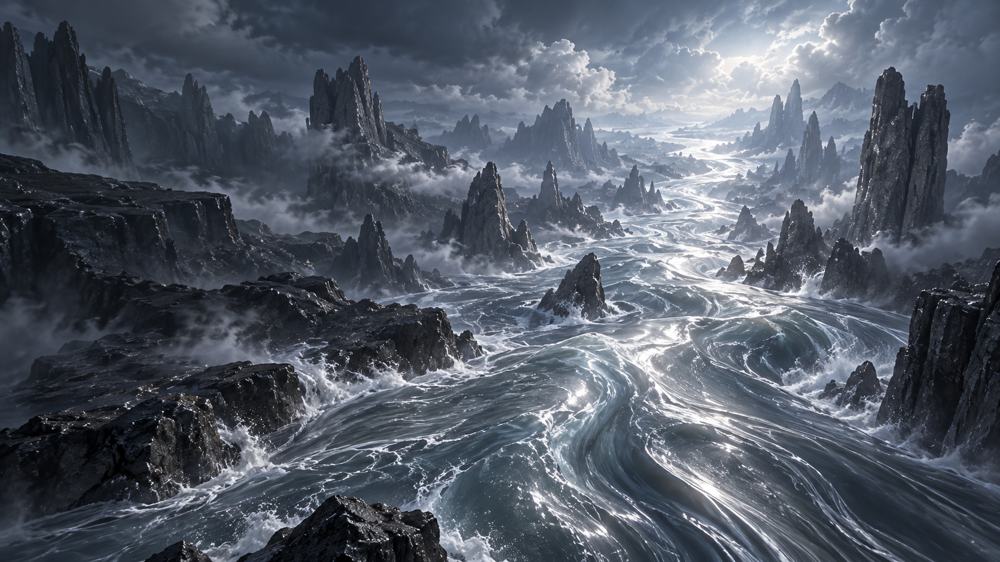

Every memory
comes back.
The stories behind your photos.
The moments only your friends understand.
Turn
them into a game.

The stories behind your photos.
The moments only your friends understand.
Turn
them into a game.